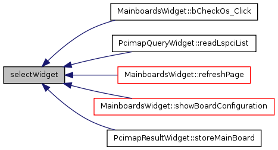

Implementation of HarixApp Class. More...
#include </home/alp/harix_proj/harix/Wt/WStackedWidget>#include </home/alp/harix_proj/harix/Wt/WLogger>#include "/home/alp/harix_proj/harix/harixApp.hpp"#include "lspci_query/pcimapQuery.hpp"#include "lspci_query/pcimapResult.hpp"#include "/home/alp/harix_proj/harix/analyze_os/analyzeOS.hpp"#include "mainboards/mainboards.hpp"#include "home.hpp"
Include dependency graph for harixApp.cc:

Go to the source code of this file.
Functions | |
| void | selectWidget (WContainerWidget *widget) |
| Global function to select current widget(page). | |
| void | removeWidget (WContainerWidget *widget) |
| Global function to remove a widget(page) to be shown. | |
Detailed Description
Implementation of HarixApp Class.
- Date:
- Thu Jul 15 13:16:19 2010
This is where all the browsing is managed. Widgets(as pages) are added/removed and shown/hide as needed.
Definition in file harixApp.cc.
Function Documentation
| void removeWidget | ( | WContainerWidget * | widget | ) |
Global function to remove a widget(page) to be shown.
Calls the HarixApp::removeWidget function with widget argument to be deleted.
Definition at line 73 of file harixApp.cc.
Here is the caller graph for this function:

| void selectWidget | ( | WContainerWidget * | widget | ) |
Global function to select current widget(page).
Calls the HarixApp::setWidget function to set the current page shown.
Definition at line 61 of file harixApp.cc.
Here is the caller graph for this function:
